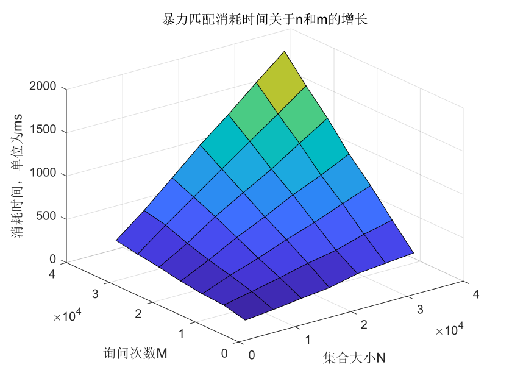
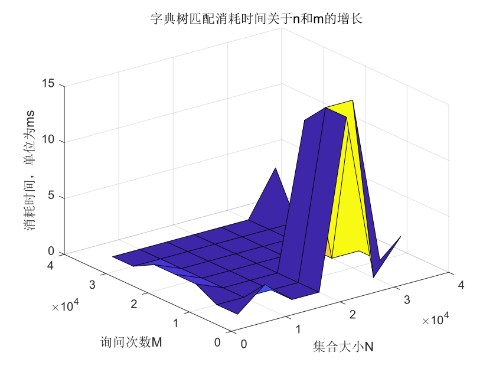
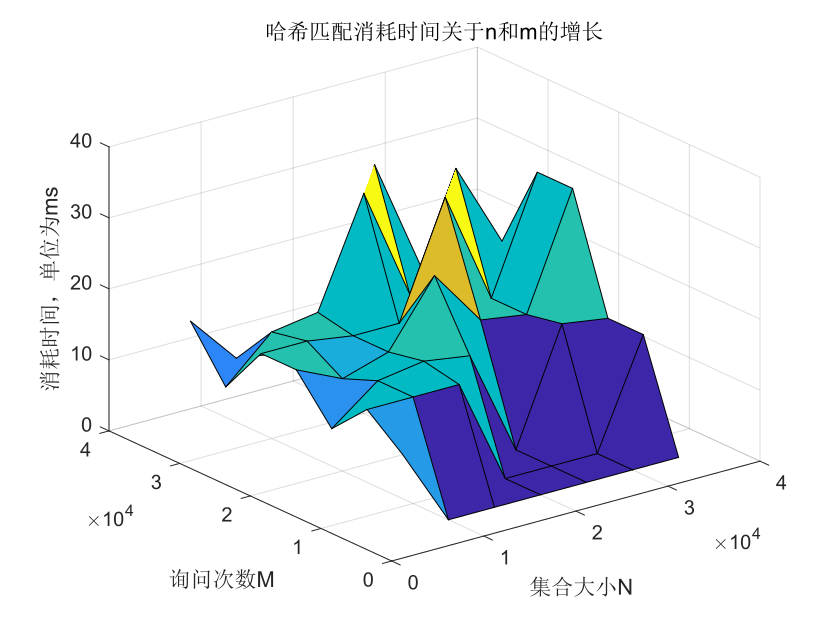

谈谈键值查找
问题提出
- 扫描身份证后，即可检索出此人的户籍信息。
- 又比如，用户登录网站时，输入了用户名，需要根据用户名比对密码是否正确。
- 然而，中国的人口比较多，所以这一过程需要较高效率的做法。
问题的抽象
- 设有二元组集合
生成测试数据
以下的代码可以生成
xrange = range (1 , 999999999999999999)miny = 1maxy = 2000n = 100000def getstr (x:int) ->str :base = 26res = ""while x != 0 :now = chr (int((x % base) + ord('a')))res = res + nowx = x // basereturn resfile = open ("data.txt" , "w")file.write(str(n) + '\n')import randomx = random.sample(xrange , n)for i in x :file.write( getstr(i) + " " + str(random.randint(miny , maxy)) + '\n')file.close ()以下其生成的一组数据中的一部分：
xxxxxxxxxxrvywwbuchyfab 1436mmbmnjwcbyxfg 1960nifgdmwjyyhzj 1283bhpcnbpqddszb 280tifcpxgihlqtj 1837gkkmfgqjjamcd 1999fklducqyxdegc 545centugeyxtkqh 482ggwhrmnxcuibd 1597nqpexngnmkxqc 1192qzdvzzvmroguh 979xoysuzkveikif 677
解法
暴力匹配
- 逐个遍历
时间复杂度分析
- 最坏情况下需要遍历整个集合，其时间复杂度为
性能表现
- 设匹配每个字符串需要的复杂度为
- 其消耗时间与输入数据规模的图表如下：

字典树
- 字典树，英文名 trie。顾名思义，就是一个像字典一样的树。

- 可以发现，这棵字典树用边来代表字母，而从根结点到树上某一结点的路径就代表了一个字符串。举个例子，
caa。 - 有时需要标记插入进 trie 的是哪些字符串，每次插入完成时在这个字符串所代表的节点处打上标记即可。
实现
xxxxxxxxxxstruct trie { int nex[100000][26], cnt; bool exist[100000]; // 该结点结尾的字符串是否存在
void insert(char *s, int l) { // 插入字符串 int p = 0; for (int i = 0; i < l; i++) { int c = s[i] - 'a'; if (!nex[p][c]) nex[p][c] = ++cnt; // 如果没有，就添加结点 p = nex[p][c]; } exist[p] = 1; }
bool find(char *s, int l) { // 查找字符串 int p = 0; for (int i = 0; i < l; i++) { int c = s[i] - 'a'; if (!nex[p][c]) return 0; p = nex[p][c]; } return exist[p]; }};
性能表现
- 设匹配每个字符串需要的复杂度为
- 其空间复杂度较高，可以视为一种空间换时间的做法。
- 其消耗时间与输入数据规模的图表如下：

哈希
思想
Hash 的核心思想在于，将输入映射到一个值域较小、可以方便比较的范围。
具体来说，哈希函数最重要的性质可以概括为下面两条：
在 Hash 函数值不一样的时候，两个字符串一定不一样；
在 Hash 函数值一样的时候，两个字符串不一定一样（但有大概率一样，且我们当然希望它们总是一样的）。
我们将 Hash 函数值一样但原字符串不一样的现象称为哈希碰撞。
实现
xxxxxxxxxxusing std::string;
const int M = 1e9 + 7;const int B = 233;
typedef long long ll;
int get_hash(const string& s) { int res = 0; for (int i = 0; i < s.size(); ++i) { res = (ll)(res * B + s[i]) % M; } return res;}
bool cmp(const string& s, const string& t) { return get_hash(s) == get_hash(t);}
性能分析
- 对字符串取得哈希值的时间复杂度为
- 其空间复杂度高于暴力，而低于字典树，可以视为一种折中。
- 其消耗时间与输入数据规模的图表如下：

综合分析
| 算法名称 | 时间复杂度 | 空间复杂度 | 应用场景 | 优点 | 缺点 |
|---|---|---|---|---|---|
| 暴力 | 数据量小 | 实现简单 | 速度慢 | ||
| 哈希 | 数据量较大 | 实现简单 | 占用空间较多 | ||
| 字典树 | 数据量大 | 速度快 | 实现复杂，占用空间多 |